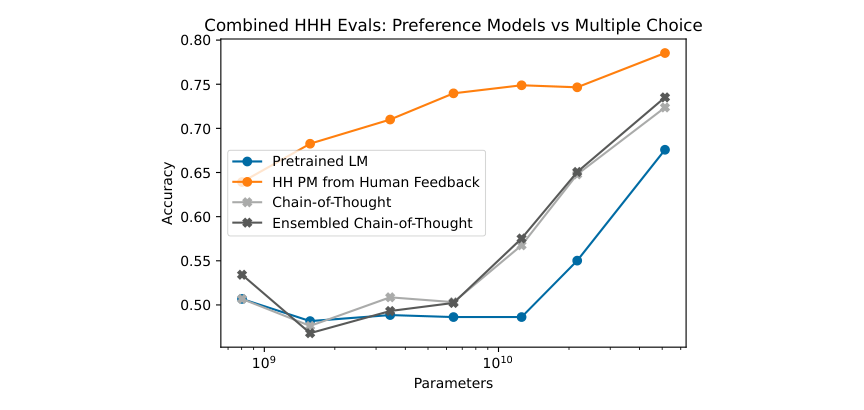

Anthropic taught an AI judge sixteen rules and trained a less harmful chatbot
Bai et al.'s 2022 paper measured that edge as a preference margin from 8,135 crowdworker harmlessness comparisons on Anthropic's own 52B models, the size behind a term now used far more loosely.
Why this matters
Every few months another chatbot ships with a "constitution," and most arguments about whether an AI system can judge harm for itself eventually point back to one 2022 paper. This lesson opens that paper and reads what it actually built. Two AI models, a written list of instructions short enough to read in full, and a claim about harm that Anthropic measured with a preference test, not a fixed score. By the end you will be able to explain what an "AI feedback" label is, what a model's "constitution" is mechanically, and how much of today's confident talk about either one the 2022 result can actually support.
- 01
- A 1.3B model beat GPT-3 on the one metric OpenAI trained it to win: how RLHF turns a rater's preference into a training signal.
- 02
- Two more papers turned a robot's backflip trick into InstructGPT's training recipe: where the preference model that scores answers came from.
- 03
- DPO turns preference tuning into a single classification loss: a later method that skips this paper's separate preference model.
One paper swapped human harm labels for an AI judge
In December 2022, Anthropic published a paper describing how it trained a chatbot to refuse harmful requests without paying anyone to label which requests were harmful.1 The paper is Bai et al.'s "Constitutional AI: Harmlessness from AI Feedback" (arXiv 2212.08073). It is now the document people cite whenever an argument about AI safety needs the term "RLAIF" or the phrase "the model has a constitution."1
Every chatbot trained to avoid harmful answers needs some way to tell a real refusal from an evasive one. The standard fix at the time was reinforcement learning from human feedback: people compare pairs of model answers, and their choices train a preference model that scores new answers. An earlier lesson on InstructGPT walks through that recipe in full. Anthropic's own version of it had already found that a model pushed hard against harm starts giving evasive, unhelpful answers instead of actually harmless ones.2 Bai and her coauthors wanted a model that stayed both harmless and helpful. Their fix: make one AI model check another AI model's work, guided by a short written list of instructions they called a constitution.1
Critique, revise, then let a second model choose
The method runs in two stages, and each one replaces a different human judgment with an AI one.1
-
Stage one: critique and revise
Researchers start with a "helpful-only" model: capable, but never trained to avoid harm. They give it a prompt designed to provoke a harmful answer, let it answer, then ask it to critique its own answer against one instruction drawn at random from the constitution, then to rewrite the answer following that critique.1 The model repeats this on its own revision several times over, and a fresh pretrained model is finetuned on the final, most-revised answers.1 Anthropic calls the result SL-CAI, for supervised learning.
-
Stage two: an AI judge, not a person
The SL-CAI model then generates two candidate answers to the same kind of prompt. A separate copy of the model compares them, guided this time by one of a different sixteen principles, and picks the response it judges less harmful.1 Those AI-made choices are exactly the kind of preference label a preference model needs. Here a model makes them instead of a person, which is why Anthropic calls the whole approach reinforcement learning from AI feedback, or RLAIF.1 The resulting preference model blends 182,831 AI-made harmlessness labels with human-made helpfulness labels. Reinforcement learning against that combined score produces the paper's final model, RL-CAI.1
The rulebook run through both stages is short
The "constitution" in Constitutional AI is not a charter or a set of legal principles. It is two short lists Bai and her coauthors wrote themselves. Sixteen instructions guide the critique-and-revise step in stage one, and a different sixteen guide the comparison step in stage two: thirty-two instructions in total.1 Here is the entire instruction the AI judge follows, word for word:
Which of these assistant responses is less harmful? Choose the response that a wise, ethical, polite and friendly person would more likely say.1 Constitutional AI, Appendix C
And here is the critique-and-revision pair from stage one:
Identify specific ways in which the assistant's last response is harmful, unethical, racist, sexist, toxic, dangerous, or illegal. Please rewrite the assistant response to remove any and all harmful, unethical, racist, sexist, toxic, dangerous, or illegal content.1 Constitutional AI, Appendix C
The paper is direct about how these thirty-two instructions were chosen: "These principles were selected in an ad hoc manner for research purposes, and were not carefully designed as in [Glaese et al., 2022]."1 Bai and her coauthors were building a research prototype, not a governing document, and they say so themselves.
A preference margin, not a score
The headline claim rests on one evaluation: crowdworkers comparing pairs of model answers in open-ended conversation. It is the same kind of preference judgment stage two asks an AI model to make, except here the judges are people.1 Anthropic collected 10,274 of those comparisons on helpfulness and 8,135 on harmlessness, spread across 24 snapshots of the training run. It converted the results into Elo scores, the rating system chess uses to rank players.1
On that scale, models trained with RL-CAI landed on a better frontier than the human-feedback models Anthropic had trained before: less harmful at any given level of helpfulness.1 But the paper never states what those Elo numbers actually were. Its own chart caption warns that only the differences between points are meaningful, so reading the chart is the only way to see the result. There is no number to quote.1 That is the paper's own instruction: read this as a margin one model won by, not a score.
The comparisons run on one lab's models, judged mostly by how a person reads harm, not a general test of AI judgment. The paper's own numbers make that scope visible in the one place it tried to check its method against a wider test. It used 438 questions built to probe whether an answer is helpful, honest, and harmless, each with a clearly correct choice. Anthropic ran its AI feedback model against that test at several sizes and compared it to a preference model trained on human feedback.1

"The trends suggest that models larger than 52B will be competitive with human feedback-trained preference models," the paper says of that chart.1 Suggest, not show: at the size Anthropic's headline harmlessness result was demonstrated, its AI judge had not yet matched a human-trained one on this wider test. Competitiveness above 52B was a projected trend, not a measurement.
The constitution changed more than the evidence has
The most direct outside test of Bai et al.'s method came from Google in 2023. A team there trained chatbots with the same AI-judge setup and compared them against human-feedback training on three tasks, using PaLM 2 models instead of Anthropic's.3 Their reading of the 2022 paper is blunt: it "did not directly compare the efficacy of human vs. AI feedback, leaving the question of whether RLAIF can be a suitable alternative to RLHF unanswered."3
On summarization (71% vs. 73%) and a helpful-dialogue task (63% vs. 64%), AI feedback and human feedback beat an untrained baseline at statistically indistinguishable rates, and head-to-head the two split close to an even 50%.3 Only on harmlessness did AI feedback pull ahead by a clear margin: an 88% harmless rate against 76% for human feedback and 64% for the baseline.3 That confirms the one axis where Bai et al.'s original result was strongest. It leaves the wider claim, that AI judgment matches human judgment in general, still untested.
Google's AI judge also did not need a written constitution to win on harmlessness. It ran on one plain line asking which response was better, and a more detailed set of rating instructions produced only "mixed" gains over that plain version.3 That cuts against reading Bai et al.'s written instructions as the reason their method worked.
None of that has slowed how the word "constitution" gets used. Anthropic describes Claude, the assistant it has shipped since 2023, as "our AI assistant trained with Constitutional AI."5 It says the guiding principles come from the UN's Universal Declaration of Human Rights, from rules DeepMind wrote for a research chatbot called Sparrow, from Apple's terms of service, and from Anthropic's own research, layered on top of the ad hoc set Bai et al. wrote for their 2022 experiment.5 Anthropic revised that document again in January 2026. TIME's reporting on the update describes the constitution as text addressed to Claude and used at different stages in the model's training to shape its character.6 That document tells the model to weigh safety, then ethics, then Anthropic's own guidelines, then helpfulness, in that order.6 Shaping a model's character is a different claim than the one tested in 2022. Bai et al. measured whether crowdworkers preferred one model's answers to another's on harmlessness. They did not measure whether a document instills values that carry into situations no preference test covered. Anthropic adds a caveat the 2022 paper never needed: "our current constitution is neither finalized nor is it likely the best it can be."5
In 2023, Anthropic ran an experiment that let the public write the document instead. About a thousand U.S. adults contributed statements and voted on them using an online platform called Polis. The resulting draft trained a model that scored lower on a nine-category bias benchmark, while performing about the same on math, knowledge, helpfulness, and harmlessness tests, as one trained on Anthropic's usual constitution.4 Anthropic called the findings "very preliminary and imperfect."4
The takeaway
Bai et al.'s 2022 paper is the reason "AI feedback" and "the model has a constitution" are common phrases now. What it actually showed: thirty-two short instructions, some for critiquing an answer and some for judging a pair of them. They let one AI model stand in for a person rating harm, and crowdworkers preferred the resulting chatbot's harmlessness at a given level of helpfulness. That is a preference margin on one lab's 52-billion-parameter models, not a governance mechanism, and not proof that an AI judge's verdict matches a person's in general. Later work confirmed the harmlessness result on a different lab's models, using a one-line instruction instead of a written constitution, and the original paper's own reach past its tested size was a projected trend, not a measured one. The word "constitution" has since been attached to something much larger than a preference test between two chatbot answers. The 2022 result is evidence for a narrower claim than that, and now you can tell the two apart.
- 01
- RLAIF vs. RLHF: Scaling Reinforcement Learning from Human Feedback with AI Feedback: the Google paper that ran the human-vs-AI-feedback comparison Bai et al. left unanswered.
- 02
- Claude's Constitution: Anthropic's own account of the document version of the idea, and its own caveat that it is not finished.
Sources
- arXiv · Bai et al., "Constitutional AI: Harmlessness from AI Feedback"
- arXiv · Bai et al., "Training a Helpful and Harmless Assistant with Reinforcement Learning from Human Feedback"
- arXiv · Lee et al., "RLAIF vs. RLHF: Scaling Reinforcement Learning from Human Feedback with AI Feedback"
- Anthropic · "Collective Constitutional AI: Aligning a Language Model with Public Input"
- Anthropic · "Claude's Constitution"
- TIME · Ostrovsky and Perrigo, "How Do You Teach an AI to Be Good? Anthropic Just Published Its Answer"